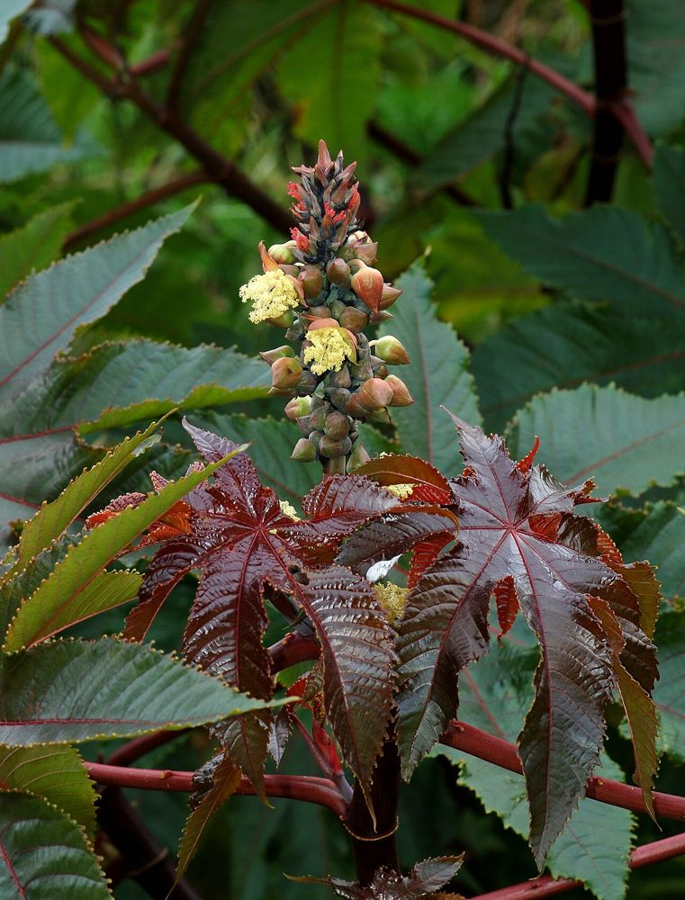

🌿 சித்த மருத்துவக் குறிப்பு:
ஆமணக்கிலிருந்து முறையாகப் பிரித்தெடுக்கப்படும் விளக்கெண்ணெய், உடல் சூட்டைத் தணிக்கவும் மலச்சிக்கலைப் போக்கவும் சித்த மருத்துவத்தில் பரவலாகப் பயன்படுகிறது. எண்ணெய்க் குளியலில் இதன் பங்கு முக்கியமானது.
🎯 முக்கியப் பயன்: ஆமணக்கு இலையைச் சூடாக வதக்கி மார்புப் பகுதியில் கட்டினால் மூச்சிரைப்பு (Wheezing) குறையும் என்பது பாரம்பரிய வழக்கம்.
⚠️ விதைகள் கடும் நஞ்சு – ஒரு சில விதைகள் கூட உயிருக்கு ஆபத்தானவை. குழந்தைகள் கையில் படாமல் வைக்கவும்.
உங்களுக்குத் தெரியுமா?
1உண்ணி போன்ற விதை
ஆமணக்கு விதை பார்ப்பதற்கு உண்ணிப் பூச்சி போலவே இருக்கும். இதன் அறிவியல் பெயர் “Ricinus” என்பதற்கே லத்தீனில் "உண்ணி" என்று பொருள்.
2விளக்கு முதல் விமானம் வரை
நம் முன்னோர் வீட்டு விளக்கு எரிக்கப் பயன்படுத்திய ஆமணக்கு எண்ணெய், இன்று உயர்தர இயந்திர மசகு எண்ணெயாகவும் பயன்படுகிறது.
3இயற்கையின் வியப்பான முரண்
இதன் விதையில் "ரிசின்" என்ற கொடிய நஞ்சு உள்ளது. ஆனால் தொழிற்சாலைகளில் முறையாகப் பிரித்தெடுக்கப்படும் எண்ணெயில் இந்த நஞ்சு இருப்பதில்லை.
இந்தத் தகவல் பயனுள்ளதாக இருந்ததா?